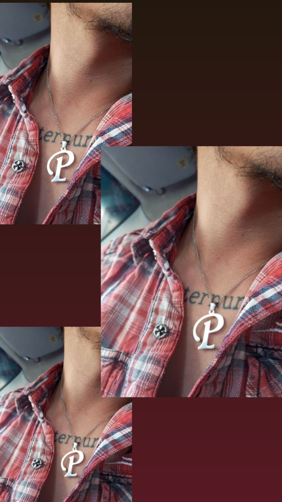

Sé que te he lastimado y que he cometido errores que han afectado nuestra relación.
Por eso, quiero pedirte perdón por todo lo que te he hecho pasar, y decirte que lo siento de todo corazón.
No puedo dejar de pensar en todas las palabras que debería haber dicho, en todas las cosas que debería haber
hecho diferente. Siento que no fui lo suficientemente bueno para ti, que no te di todo lo que merecías, que
no te traté con el amor que merecías. Pero también quiero que sepas que he aprendido de mis errores. Ahora
entiendo que las cosas que hice estuvieron mal y que lastimé a la persona que más amo en este mundo. Quiero
que sepas que siempre tendré en mi corazón el deseo de enmendar mis errores, de ser mejor para ti, de hacerte
feliz. Siempre estaré dispuesto a luchar por nuestra relación, a trabajar juntos para superar cualquier obstáculo.
Te amo más que nada en este mundo, y siempre estaré agradecido por tu amor que una vez sentiste y por tu paciencia.
Espero que algún día puedas perdonarme y darme otra oportunidad para que juntos podamos construir ese futuro
que soñamos lleno de amor y felicidad. Ya ha pasado tiempo desde que estuvimos juntos, desde nuestro último
video juntos, las risas, los juegos, Ios chistes, los abrazos y los besos, la última vez que dormimos juntos,
la última vez que me acosté en tu pecho deseando que ese momento fuera para siempre. Quisiera regresar a ese
momento, esos meses, esos días, dónde lo único que quería era ese momento donde pudiéramos estar juntos,
siendo mi primer amor, fuiste mi primera vez en muchas cosas, en muchas sensaciones. Sé que ya no eres esa
morenita de la que me enamoré, que ya perdí a esa morenita, que aquellos que fuimos solo será eso, un
"fuimos" ya no es un "somos o seremos" ya no más, tal vez en otra vida, en otro universo, tú y yo estemos
juntos y nunca dejaré de luchar por querer estar en una de esas vidas o en uno de esos universos donde lo
volvimos a intentar...